Pneumologia · 89 min · Fleischner Society 2024 · monografia
A radiografia de tórax é o exame que o clínico mais pede e o que ele menos aprendeu a ler por conta própria. Este texto não ensina a substituir o radiologista: ensina a extrair, em dois minutos e à beira do leito, a informação que muda a conduta antes de qualquer laudo — e, tão importante quanto, a saber quando o filme normal não afasta nada. A sequência é a que o exame permite: julgar a técnica, varrer em ordem, reconhecer cinco padrões, localizar pelo sinal da silhueta e decidir se aquilo basta ou se o caso pede ultrassom ou tomografia.
Tudo o que a radiografia mostra vem de uma única propriedade: quanto de raios X cada tecido absorve. São cinco faixas, da mais escura para a mais clara: ar, gordura, partes moles e líquidos (que se confundem entre si), cálcio e osso e metal. Duas consequências práticas nascem daí e explicam metade dos erros de leitura.
A primeira é que líquido e músculo têm a mesma densidade. Sangue, pus, água, tumor e coração se equivalem no filme. Por isso a radiografia diz que há alguma coisa, e quase nunca o que é: uma opacidade de base pode ser derrame, consolidação, atelectasia ou massa, e a diferença sai do contexto, da forma e do comportamento das estruturas vizinhas — não da tonalidade de cinza.
A segunda é que a radiografia é uma projeção somada: todo o tórax achatado em um plano. Estruturas de profundidades diferentes se sobrepõem e podem criar uma opacidade que não existe, ou apagar uma que existe. É o motivo de o perfil ser tão útil e de a tomografia resolver o que a radiografia só sugere.
A dose é baixa e não deve ser argumento para não pedir quando há indicação: uma incidência posteroanterior de tórax gira em torno de 0,02 mSv, algo como poucos dias de radiação natural de fundo. Isso não autoriza o filme diário de rotina em quem está estável — a radiografia seriada sem pergunta clínica gera achado incidental, cria investigação e não muda desfecho —, mas afasta a hesitação diante de uma dúvida real.
A pergunta do técnico no plantão — "PA ou AP?" — não é burocracia. As duas incidências produzem imagens com propriedades diferentes, e escolher errado é a causa mais comum de laudo falso.
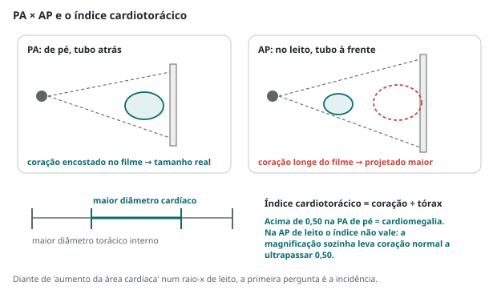
Posteroanterior (PA), de pé, em inspiração máxima é o padrão. Além de não ampliar o coração, ela permite ver nível hidroaéreo e ar livre subdiafragmático, que dependem da gravidade. É a incidência que se deve pedir sempre que o paciente puder ficar de pé.
Anteroposterior (AP), no leito, é a que o paciente grave recebe, e vem com um pacote de distorções que precisa ser lido junto com a imagem: coração aumentado, mediastino alargado, hilos mais proeminentes, derrame que se espalha em lâmina posterior e "vela" o hemitórax inteiro em vez de fazer menisco, e pneumotórax que não sobe para o ápice. Nada disso é doença — é geometria.
Perfil acrescenta a terceira dimensão. Ele localiza a lesão no eixo anteroposterior, mostra o espaço retroesternal e o retrocardíaco — dois pontos cegos da PA — e é a incidência mais sensível para derrame pequeno, porque o seio costofrênico posterior é o ponto mais baixo da cavidade pleural em pé.
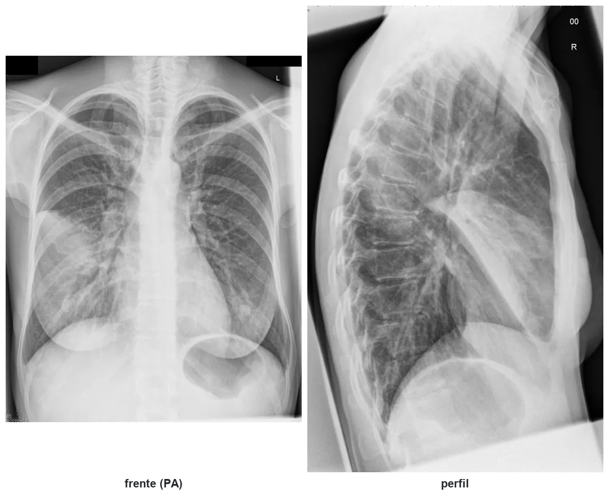
Decúbito lateral com raio horizontal é o truque esquecido. Deitando o paciente sobre o lado do derrame, o líquido livre escorre e se estende ao longo da parede: confirma que é livre e não loculado. Deitando sobre o lado oposto, ou com o lado esquerdo para baixo na suspeita de perfuração, o ar sobe e se destaca. Hoje o ultrassom resolve a primeira pergunta melhor e mais rápido, mas onde não há ultrassom, essa incidência continua valendo.
A radiografia em expiração foi durante décadas indicada para "revelar" pneumotórax pequeno, e a prática caiu: o ganho é marginal e o filme em expiração é justamente aquele que cria falsa congestão e falsa cardiomegalia. Não a peça de rotina.
Antes de procurar doença, julgue a imagem. A pergunta não é "o que tem aqui?", e sim "esta imagem permite responder o que eu preciso saber?". São quatro controles, na ordem em que se fazem.
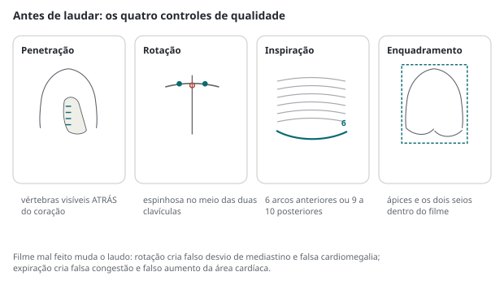
Penetração. O filme está bem penetrado quando se distinguem as vértebras torácicas através da silhueta cardíaca e a trama vascular ainda é visível atrás do coração. Pouco penetrado, tudo fica esbranquiçado e cria consolidação e congestão que não existem. Muito penetrado, o parênquima escurece e some o infiltrado discreto e o pneumotórax fino.
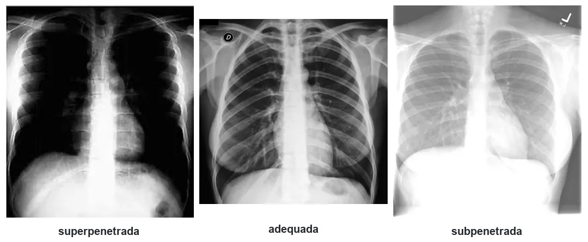
Rotação. Com o paciente reto, a apófise espinhosa da vértebra fica equidistante das extremidades mediais das clavículas. Rodado, o hemitórax que gira para a frente parece mais opaco, o mediastino parece deslocado e o coração parece maior. "Mediastino alargado" em filme rodado é achado que já mandou paciente para angiotomografia sem necessidade — e, o que é pior, já tranquilizou equipe diante de alargamento verdadeiro.
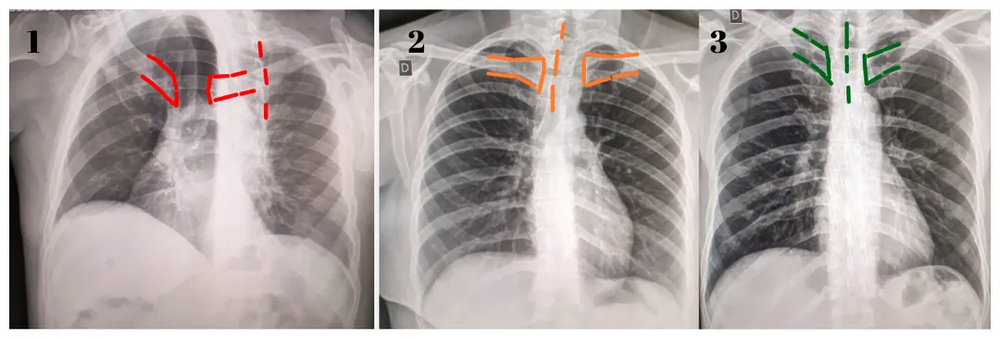
Inspiração. Conte os arcos costais acima da cúpula direita: 6 arcos anteriores ou 9 a 10 posteriores indicam inspiração adequada. Filme em expiração comprime a trama, eleva as cúpulas, alarga a silhueta cardíaca e fabrica congestão. Antes de laudar edema pulmonar em radiografia de leito, conte as costelas.
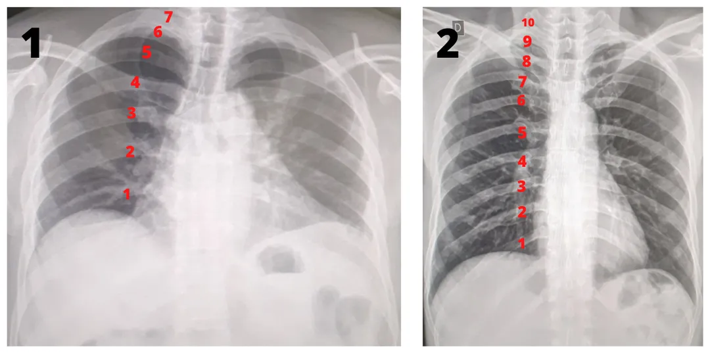
Enquadramento. Ápices e os dois seios costofrênicos precisam estar dentro do filme. Um seio cortado não é seio livre — é seio não avaliado, e a diferença deve constar da descrição.
A ordem existe por um motivo psicológico bem documentado: encontrado o primeiro achado, o olho para de procurar. É o erro de satisfação de busca — ver a pneumonia e não ver o pneumotórax ao lado dela, ver a fratura de arco e não ver o nódulo do ápice. A varredura sistemática é o que impede isso, e ela precisa ser feita inteira mesmo quando a resposta já apareceu na primeira olhada.
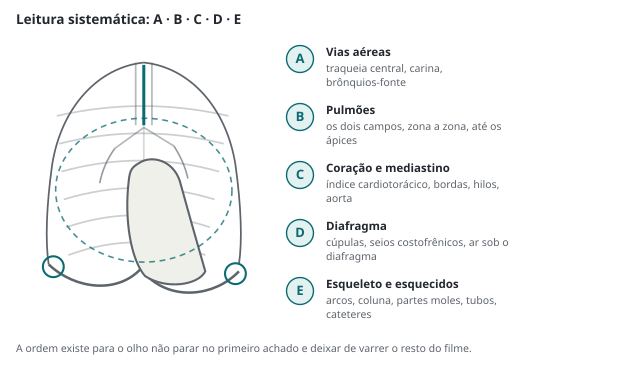
A radiografia de frente não mostra lobos: mostra sombras somadas. O que permite localizar a lesão sem tomografia é uma regra simples de física — duas estruturas de densidade semelhante encostadas uma na outra perdem a interface entre si.
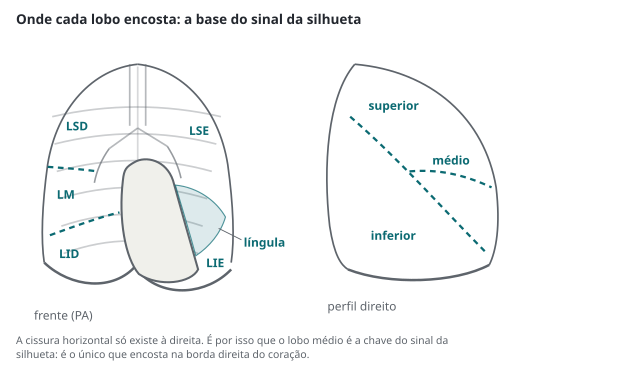
No glossário da Fleischner Society, o sinal da silhueta é definido como a ausência de representação de uma borda anatômica de partes moles, causada por consolidação ou atelectasia do pulmão adjacente, por massa volumosa ou por líquido pleural contíguo. Repare na precisão: o sinal se refere justamente à ausência de uma silhueta que deveria estar lá.
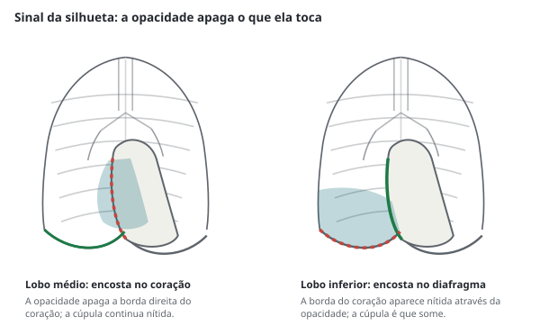
| Borda que desaparece | Estrutura em contato | Localização provável |
|---|---|---|
| Borda direita do coração | lobo médio | consolidação ou atelectasia do lobo médio |
| Borda esquerda do coração | língula | consolidação da língula |
| Cúpula diafragmática | lobo inferior | lobo inferior do mesmo lado |
| Arco aórtico | segmento apicoposterior do lobo superior esquerdo | lobo superior esquerdo |
| Mediastino superior direito | lobo superior direito | lobo superior direito |
O vocabulário aqui não é preciosismo: "infiltrado" é termo sem definição, e o glossário da Fleischner Society existe justamente para que radiologista e clínico digam a mesma coisa. Vale conhecer as cinco definições que mais aparecem na enfermaria.
| Termo | Definição (Fleischner Society) | O que isso implica |
|---|---|---|
| Consolidação | aumento homogêneo da atenuação do parênquima que obscurece as margens de vasos e paredes brônquicas; corresponde a exsudato ou outro produto que substitui o ar alveolar | alvéolo cheio; pode ter broncograma aéreo |
| Opacidade em vidro fosco | área de opacidade tênue na qual as margens dos vasos ficam indistintas, mas não apagadas | preenchimento parcial do espaço aéreo ou espessamento intersticial |
| Broncograma aéreo | brônquios cheios de ar desenhados sobre um fundo de pulmão opaco e sem ar | implica via aérea proximal pérvia — favorece consolidação sobre atelectasia obstrutiva e sobre derrame |
| Atelectasia | redução da insuflação de parte ou de todo o pulmão, com volume reduzido e opacidade aumentada, frequentemente com deslocamento de cissuras, brônquios e vasos | o achado que define é a perda de volume, não a opacidade |
| Padrão reticular | inúmeras opacidades lineares finas que, somadas, lembram uma rede | doença intersticial até prova em contrário |
| Nódulo × massa | opacidade arredondada de até 3 cm é nódulo; acima de 3 cm, massa | o corte de 3 cm separa condutas |
| Cavidade | espaço com gás dentro de consolidação, massa ou nódulo | necrose drenada pela via aérea; pode ter nível líquido |
Com esse vocabulário, cinco padrões cobrem quase tudo o que a radiografia de tórax mostra: consolidação, atelectasia, reticulação, nódulos e massas e hipertransparência. E há uma pergunta única que separa os dois primeiros em cinco segundos.
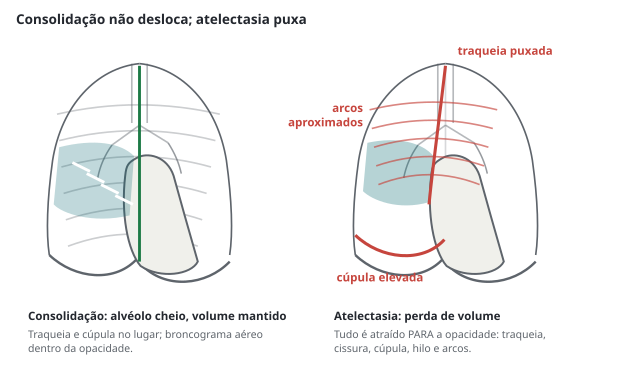
flowchart TD
A["Opacidade em um hemitórax"] --> B{"Traqueia, cissuras e cúpula:
onde estão?"}
B -->|"atraídas PARA a opacidade"| C["Perda de volume
= atelectasia"]
B -->|"no lugar"| D["Volume mantido
= consolidação ou massa"]
B -->|"empurradas para o LADO OPOSTO"| E["Efeito de massa
= derrame volumoso, massa, pneumotórax hipertensivo"]
C --> C1{"Adulto fumante?"}
C1 -->|"sim"| C2["Investigar obstrução brônquica:
tomografia e broncoscopia"]
C1 -->|"não"| C3["Rolha de secreção, pós-operatório,
compressão extrínseca"]
D --> D1{"Broncograma aéreo?"}
D1 -->|"sim"| D2["Alvéolo cheio com via aérea pérvia:
pneumonia, edema, hemorragia, neoplasia lepídica"]
D1 -->|"não"| D3["Considerar derrame, massa
ou espessamento pleural"]
A atelectasia merece um parágrafo próprio porque tem subtipos com condutas diferentes. A segmentar e laminar, comum no pós-operatório e no paciente com dor, responde a analgesia, fisioterapia e mobilização. A lobar em adulto fumante é obstrução brônquica até prova em contrário e pede tomografia e broncoscopia. A pulmonar total, com desvio do mediastino para o lado da opacidade, distingue-se do derrame maciço justamente pelo sentido do desvio: derrame empurra, atelectasia puxa. E a redonda, associada à exposição prévia a asbesto, é uma pseudomassa que a tomografia identifica pelo "sinal da cauda de cometa" e que não deve virar investigação de câncer.
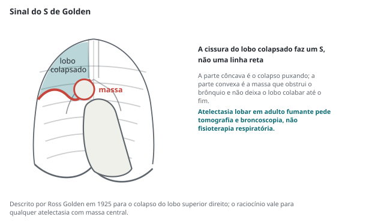
Comece pela traqueia. Ela deve ser central, com desvio fisiológico discreto para a direita na altura do arco aórtico. Traqueia deslocada é o sinal mais precoce e mais barato de que alguma coisa mudou o volume de um hemitórax, e o sentido do desvio separa as causas antes de qualquer outro achado.
Ainda em A, confira a coluna aérea traqueal em toda a extensão visível, a posição da carina — habitualmente entre T4 e T6 — e os brônquios-fonte. Estreitamento traqueal, desvio angulado ou coluna aérea interrompida em paciente com estridor mudam a conduta imediatamente e não devem esperar laudo.
O aumento do átrio esquerdo aparece aqui de modo indireto: ele alarga o ângulo da carina, que normalmente fica em torno de 90 graus, e cria o duplo contorno na borda direita do coração. É um dos poucos achados em que a radiografia de tórax ainda ensina cardiopatia estrutural — clássico da estenose mitral.
Pneumonia. O padrão clássico é a consolidação com broncograma aéreo respeitando limites lobares, e o sinal da silhueta a localiza. Mas o ponto que muda a prática é outro, e é numérico: a radiografia não exclui pneumonia. Num estudo com 3.423 pacientes de pronto-socorro que fizeram radiografia e tomografia por indicação clínica, a radiografia teve sensibilidade de 43,5% (IC 95% 36,4–50,8) e especificidade de 93,0% para opacidades pulmonares, com valor preditivo positivo de apenas 26,9%. No ensaio francês que fez tomografia precoce em 319 pacientes com suspeita clínica de pneumonia adquirida na comunidade, a tomografia encontrou infiltrado em 33% daqueles cuja radiografia era normal e afastou pneumonia em 29,8% daqueles cuja radiografia mostrava infiltrado, mudando a classificação diagnóstica em 58,6% dos casos.
Vale reconhecer as apresentações que não parecem pneumonia: a pneumonia redonda, que simula massa e é mais comum em crianças; a atípica, com padrão intersticial difuso e dissociação clínico-radiológica; a aspirativa, que segue a gravidade — segmento posterior do lobo superior e superior do inferior no paciente deitado, basal no paciente sentado; e a necrotizante, com cavitação dentro da consolidação, que muda o antibiótico e a duração e levanta a hipótese de empiema associado.
Congestão e edema. A sequência radiológica do aumento da pressão de enchimento é ordenada: redistribuição do fluxo para os ápices (cefalização), depois espessamento dos septos interlobulares — as linhas B de Kerley, opacidades lineares finas, perpendiculares à pleura e em contato com ela, junto às bases —, depois infiltrado peri-hilar em asa de borboleta e, com frequência, derrame pleural, tipicamente bilateral e maior à direita.
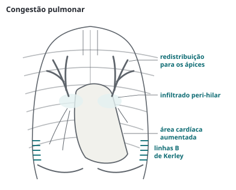
Padrão intersticial. Reticulação difusa, sobretudo basal e periférica, com redução de volume pulmonar, aponta para doença intersticial fibrosante; reticulação de instalação aguda em paciente febril aponta para pneumonia atípica, viral ou edema intersticial. A radiografia aqui serve para levantar a hipótese e indicar a tomografia de alta resolução, que é o exame que de fato classifica.
Nódulos e massas. Diante de opacidade arredondada, quatro perguntas orientam: tamanho (até 3 cm é nódulo, acima é massa), margens (espiculada favorece malignidade; lisa e bem definida, benignidade), calcificação (padrões central, laminar concêntrico, difuso e em pipoca favorecem lesão benigna — granuloma e hamartoma; calcificação excêntrica ou salpicada não tranquiliza) e cavitação (parede espessa e irregular sugere neoplasia ou abscesso; parede fina, cisto ou lesão infecciosa). O complexo de Ranke — nódulo calcificado no parênquima com linfonodo hilar calcificado — é a cicatriz da tuberculose primária e não pede investigação.
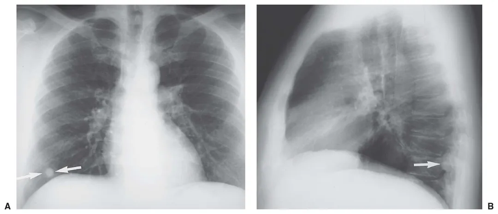
Hipertransparência, o quinto padrão, é a menos treinada. Um hemitórax mais escuro que o outro pode ser pneumotórax, enfisema e bolha, obstrução brônquica com aprisionamento aéreo (o corpo estranho da criança, o tumor do adulto), embolia com oligoemia regional — ou, muito mais frequentemente, artefato de rotação e mastectomia. Antes de anunciar doença, olhe as partes moles dos dois lados e confira a rotação.
O índice cardiotorácico é a razão entre o maior diâmetro transverso do coração e o maior diâmetro interno do tórax; acima de 0,50 em PA de pé indica aumento da área cardíaca. Em AP de leito, o índice não vale — a magnificação sozinha leva coração normal a ultrapassar 0,50 —, e insistir nele é fabricar cardiopatia.
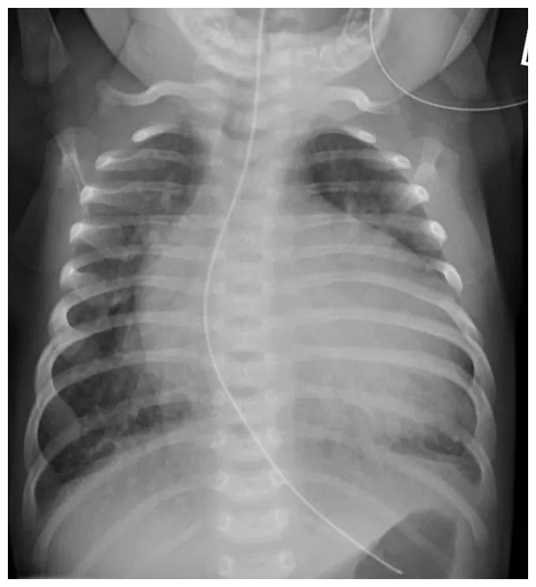
As bordas ensinam qual câmara cresceu. A borda direita é formada pelo átrio direito; duplo contorno ali, com alargamento do ângulo da carina e abaulamento do arco médio, indica átrio esquerdo aumentado. A borda esquerda tem, de cima para baixo, botão aórtico, arco médio (tronco da pulmonar e apêndice atrial esquerdo) e ventrículo esquerdo; a ponta que desce e lateraliza é do ventrículo esquerdo, enquanto o coração que se levanta e ocupa o espaço retroesternal no perfil sugere ventrículo direito. O derrame pericárdico volumoso produz a silhueta em moringa, com bordas lisas e perda dos contornos das câmaras — e a radiografia é ruim para isso: derrame de instalação rápida, que causa tamponamento, pode não aumentar a silhueta. Suspeita de tamponamento se resolve com ecocardiograma, nunca com radiografia.
Mediastino alargado é achado de alto risco e baixa especificidade. Na emergência, a associação com dor torácica grave, assimetria de pulsos ou hipotensão obriga a angiotomografia. Na avaliação eletiva, a regra dos 4 T organiza as massas do mediastino anterior: tireoide mergulhante, timoma, teratoma e outras neoplasias de células germinativas, e "terrível" linfoma. Antes de tudo isso, porém, exclua as duas causas banais: incidência AP e rotação.
Os hilos são vasculares. O hilo esquerdo é normalmente 1 a 2 cm mais alto que o direito; os dois devem ter densidade e forma semelhantes e contornos côncavos. Hilo aumentado, denso ou com contorno convexo levanta linfonodomegalia — sarcoidose, linfoma, tuberculose, neoplasia — ou hipertensão pulmonar, em que as artérias centrais são calibrosas e há afilamento abrupto na periferia. Hilo deslocado, por sua vez, costuma indicar perda de volume no lobo correspondente.
A cúpula direita fica 1 a 2 cm mais alta que a esquerda, por causa do fígado. Elevação de uma cúpula sugere paralisia frênica, perda de volume no pulmão daquele lado, eventração, hérnia ou massa abdominal; rebaixamento bilateral com achatamento sugere hiperinsuflação. Sob a cúpula esquerda, a bolha gástrica é normal e serve de referência: se o que está sob o diafragma tem nível hidroaéreo e paredes, é víscera; se é uma faixa fina de ar que desenha o diafragma dos dois lados, é ar livre.
Derrame pleural. A regra de volume mais citada vem da radiografia e é útil justamente por dizer o que a radiografia não vê: o líquido aparece como menisco no perfil a partir de cerca de 50 mL, na PA a partir de cerca de 200 mL, e o menisco apaga a cúpula em torno de 500 mL.
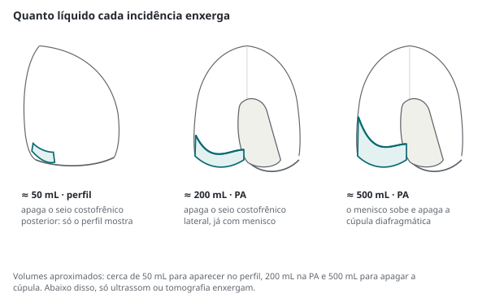
Dois cuidados. O primeiro: no paciente deitado, o líquido se espalha em lâmina posterior e não faz menisco — ele apenas "vela" o hemitórax de forma difusa, com trama vascular ainda visível através da opacidade, e o volume é rotineiramente subestimado. O segundo: derrame subpulmonar imita cúpula elevada, com o ponto mais alto deslocado lateralmente e a bolha gástrica afastada da cúpula à esquerda. Na dúvida, ultrassom.
Pneumoperitônio. Ar livre sob o diafragma em paciente com abdome agudo é indicação cirúrgica, e o achado depende inteiramente da posição.
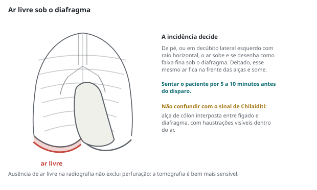
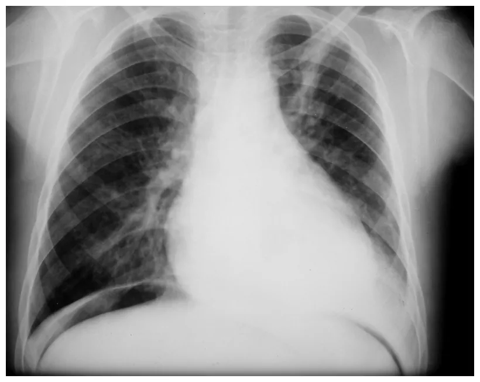
Não confunda com o sinal de Chilaiditi: alça de cólon interposta entre fígado e diafragma, em que se veem haustrações dentro do ar. É variação anatômica e não indica cirurgia. Também vale lembrar do pneumomediastino, com ar delineando as bordas do coração, da aorta e do mediastino, muitas vezes acompanhado de enfisema cervical — no contexto de vômitos e dor torácica, a hipótese de perfuração esofágica precisa ser nomeada.
De pé, o achado é a linha pleural: uma linha fina, paralela à parede torácica, com ausência de trama vascular além dela. Deitado, o ar não sobe para o ápice — ele se acumula na porção anterior e inferior, e produz o sinal do sulco profundo: seio costofrênico anormalmente escuro, alongado e aprofundado, muitas vezes com a borda do coração e a cúpula excessivamente nítidas.
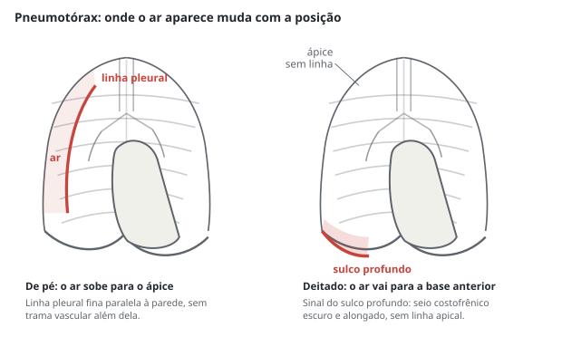
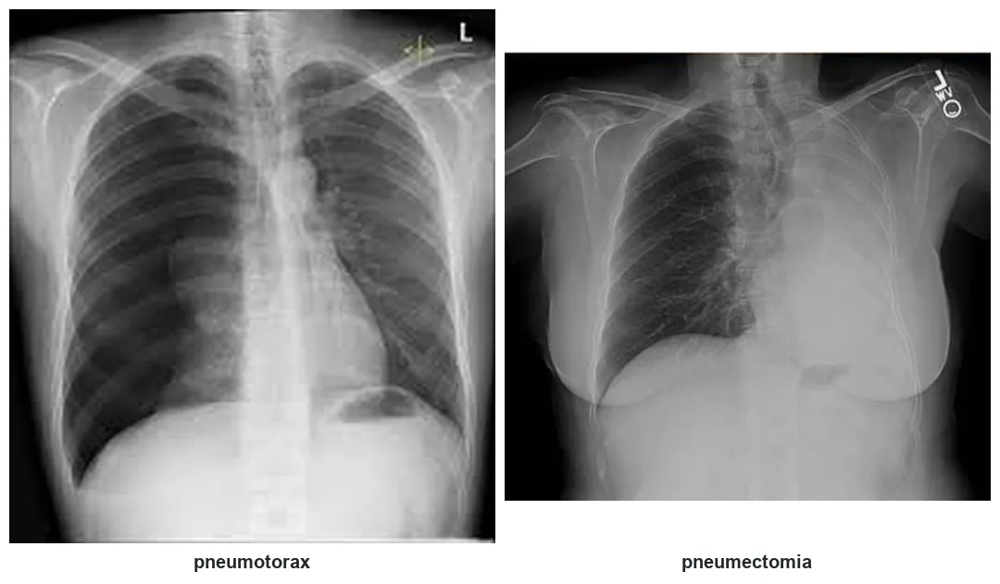
O desempenho da radiografia aqui é modesto e vale saber de cabeça: em metanálise de 13 estudos comparando ultrassonografia pleural e radiografia com padrão de referência, a radiografia teve sensibilidade de 39,8% (IC 95% 29,4–50,3) com especificidade de 99,3%, enquanto o ultrassom alcançou sensibilidade de 78,6% com especificidade de 98,4%. Ou seja: radiografia positiva praticamente fecha; radiografia negativa não afasta, sobretudo no paciente deitado.
Sobre o tamanho, a diretriz de doença pleural da British Thoracic Society de 2023 mede a distância interpleural na altura do hilo, considerando grande o pneumotórax com 2 cm ou mais. A mudança conceitual dessa edição, porém, é mais importante do que o número: o algoritmo passou a ser guiado principalmente pelos sintomas e pela prioridade do paciente, e não pelo tamanho isolado — manejo conservador é opção legítima no pneumotórax espontâneo primário com sintomas mínimos, e o manejo ambulatorial passou a ter lugar em serviços com estrutura de seguimento.
flowchart TD A["Dispneia súbita
dor pleurítica"] --> B{"Instável?
hipotensão, jugulares, desvio de traqueia"} B -->|"sim"| C["Pneumotórax hipertensivo:
descomprimir e drenar AGORA
sem esperar imagem"] B -->|"não"| D{"Ultrassom disponível
à beira do leito?"} D -->|"sim"| E["Procurar deslizamento pleural,
linhas B e ponto pulmonar"] D -->|"não"| F["Radiografia de tórax
de pé, se possível"] E --> G{"Sem deslizamento
com ponto pulmonar?"} G -->|"sim"| H["Pneumotórax confirmado:
conduta pela clínica e pelo tamanho"] G -->|"não"| I["Procurar outra causa:
embolia, edema, pneumonia, broncoespasmo"] F --> J{"Linha pleural
ou sulco profundo?"} J -->|"sim"| H J -->|"não, mas suspeita alta"| K["Radiografia negativa NÃO afasta:
ultrassom ou tomografia"]
O "E" é onde mora o achado que ninguém procurava. Percorra os arcos costais um a um em busca de fratura, lesão lítica ou blástica e erosão; olhe clavículas, escápulas, úmeros e a coluna visível. Nas partes moles, procure enfisema de subcutâneo — que aponta pneumotórax, pneumomediastino ou lesão de via aérea —, assimetria de sombra mamária, massas de parede e corpos estranhos.
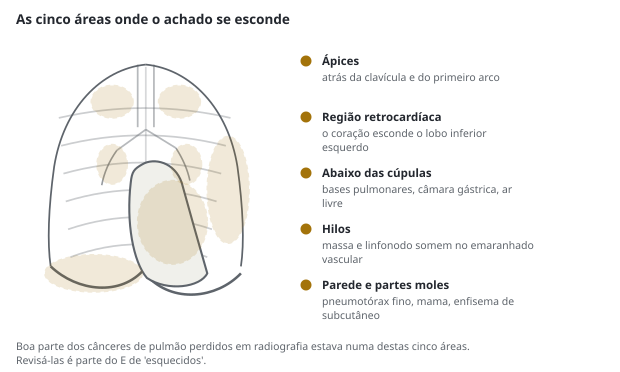
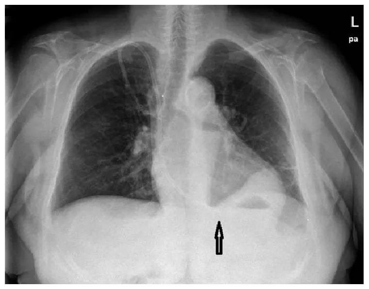
Tubos e cateteres merecem um protocolo próprio, porque a radiografia é o padrão de confirmação e porque o erro aqui é evitável e grave.
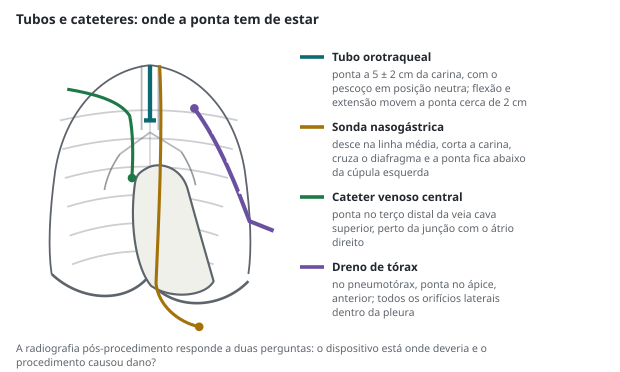
Tubo orotraqueal: a ponta deve ficar a 5 ± 2 cm da carina com o pescoço em posição neutra. Flexão e extensão cervicais deslocam a ponta em cerca de 2 cm em cada sentido — motivo pelo qual a posição da cabeça precisa constar do pedido. Ponta abaixo da carina significa intubação seletiva, quase sempre do brônquio-fonte direito, com atelectasia contralateral.
Sonda nasogástrica ou enteral: a confirmação radiológica clássica exige quatro passos — a sonda evita os contornos brônquicos, corta a carina ao meio, cruza o diafragma na linha média e tem a ponta visível abaixo da cúpula esquerda, cerca de 10 cm além da junção esofagogástrica. Sonda em via aérea usada para dieta é evento adverso grave e classificado como evitável; a radiografia só cumpre esse papel se o trajeto inteiro for conferido.
Cateter venoso central: ponta no terço distal da veia cava superior, próximo à junção cavoatrial. Além de conferir a ponta, o filme pós-punção responde à segunda pergunta: houve pneumotórax ou hemotórax?
Dreno de tórax: todos os orifícios laterais devem estar dentro da cavidade pleural — o orifício mais proximal costuma ser marcado por uma interrupção na linha radiopaca. Ar sobe e líquido desce: dreno para pneumotórax vai para cima e para a frente; para derrame, para baixo e para trás.
Saber o limite do exame é parte de saber usá-lo. Três comparações resumem o essencial e valem ser guardadas com os números.
| Pergunta | Radiografia | Alternativa e desempenho |
|---|---|---|
| Há pneumonia? | sensibilidade 43,5% contra tomografia em pronto-socorro; em metanálise com tomografia como referência, 72,6% de sensibilidade e 82,0% de especificidade | ultrassom pulmonar: 90,0% de sensibilidade e 90,8% de especificidade; tomografia como padrão |
| Há pneumotórax? | sensibilidade 39,8%, especificidade 99,3% | ultrassom: sensibilidade 78,6%, especificidade 98,4% |
| É insuficiência cardíaca? | 18,7% dos internados por descompensação não tinham congestão no filme | peptídeo natriurético, ultrassom com linhas B, ecocardiograma |
| Há embolia pulmonar? | não responde; serve para achar diagnóstico alternativo | escore clínico, D-dímero, angiotomografia |
| Qual doença intersticial? | levanta a hipótese | tomografia de alta resolução |
O ultrassom pulmonar deixou de ser exame de exceção. O protocolo BLUE mostrou que a combinação de deslizamento pleural, linhas A e B, consolidações e pesquisa de trombose venosa classifica a causa de insuficiência respiratória aguda à beira do leito com acurácia alta e em poucos minutos. Para o clínico, três leituras já mudam a conduta: deslizamento pleural presente afasta pneumotórax naquele ponto; três ou mais linhas B num espaço intercostal caracterizam síndrome intersticial — no contexto certo, edema; e derrame com septações é derrame que provavelmente precisará de drenagem, não de punção única.
flowchart TD A["Dispneia aguda"] --> B["Radiografia de tórax
+ ultrassom à beira do leito"] B --> C{"Consolidação com
broncograma?"} C -->|"sim"| D["Pneumonia:
antibiótico e estratificação de gravidade"] C -->|"não"| E{"Linhas B difusas
e bilaterais?"} E -->|"sim"| F["Congestão:
peptídeo natriurético e ecocardiograma"] E -->|"não"| G{"Deslizamento pleural
ausente?"} G -->|"sim"| H["Pneumotórax"] G -->|"não"| I{"Radiografia normal
com hipoxemia?"} I -->|"sim"| J["Pensar embolia pulmonar,
anemia, acidose, causa não pulmonar"] I -->|"não"| K["Reavaliar: derrame, DPOC,
obstrução alta, causa mista"]
A descrição do clínico não substitui laudo, mas registra o que foi visto no momento em que a decisão foi tomada — e é isso que o prontuário precisa. Uma descrição útil tem cinco partes e evita duas palavras.
As duas palavras a evitar são "infiltrado", que não tem definição e por isso não comunica nada, e "normal" quando o exame é limitado — nesse caso o correto é "sem alterações evidentes nas estruturas avaliadas", nomeando o que ficou fora do filme ou o que a técnica não permitiu julgar.